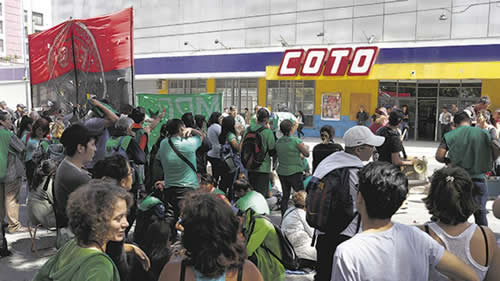

Real Chubut - Agencia de Noticias


"El Presidente vive en un país imaginario"

La CTEP, Barrios de Pie, la CCC, el FOL y otras organizaciones le reclamaron al Gobierno un aumento del salario social y más fondos para comedores.
"La Canasta Alimentaria tuvo una inflación del 54 por ciento. En los barrios hay compañeras que están sosteniendo a la familia entera con un plan social de 6 mil pesos, es una situación imposible... y encima hay que aguantarlo a (Mauricio) Macri diciendo que la pobreza bajó, que hay más puestos de trabajo o que estamos avanzando. El Presidente vive en un país imaginario. Lo invitamos a que venga a los barrios", desafió, megáfono en mano y frente al operativo que custodiaba el hipermercado, el referente del FOL (Frente de Organizaciones en Lucha). Con cinco acampes frente a grandes supermercados de la Ciudad de Buenos Aires, desocupados de las organizaciones sociales le reclamaron al Gobierno un aumento en el monto del salario social complementario y más partidas para los comedores. La jornada de protesta también incluyó ollas populares, la principal instalada en el Obelisco.
Salieron a la calle la CTEP, Barrios de Pie, la Corriente Clasista y Combativa, el Frente Darío Santillán, el FOL, el Movimiento de Resistencia Popular y el Frente de Organizaciones Barriales. En estos movimientos –especialmente en los más chicos– hay mar de fondo a raíz de que la ministra de Desarrollo Social, Carolina Stanley, dio de baja planes prometidos para enero y febrero de este año.
Este ajuste en los programas que Desarrollo Social asigna a las organizaciones e intendencias no responde a un desconocimiento de la crisis. Por el contrario, el Gobierno aumentó en un 46 por ciento la Asignación Universal por Hijo, un ingreso de carácter universal, en un gesto que muestra su preocupación ante posibles desbordes por las dificultades para acceder a la comida de crecientes sectores de la población. Sin embargo, al mismo tiempo que subía la AUH fueron recortados los planes de los movimientos.
El martes, antes de esta jornada de protesta, los dirigentes sociales mantuvieron una reunión con funcionarios de Stanley. Además de una suba en el salario social complementario, que hoy es de 6 mil pesos, reclamaron que la cartera envíe más partidas de alimentos a los comedores barriales. Les respondieron que no hay recursos suficientes para atender sus pedidos.
Al acampe frente al supermercado Coto de Constitución fueron unas quinientas personas. Casi todas eran mujeres. La mayoría llegaron desde el sur del conurbano, después de viajar en el ferrocarril Roca. También había vecinos de La Boca y del barrio donde se realizó la protesta.
"Nosotros tenemos un comedor en la calle Brasil al 1500. El Estado nos manda doscientas raciones, pero tenemos 240 comensales y la propia dirección de comedores del gobierno porteño nos sigue mandando más personas. La gente se presenta para que le demos una vianda, pero no nos alcanza la comida. Algunos llegan con un papel de derivación que les dieron en el Centro de Gestión y Participación. ¿Cómo quieren que hagamos?", se preguntó Andrea Goldberg, del Movimiento Resistencia Popular.
En la cuadra de Lima al 1500, los manifestantes cortaron uno de los carriles. La puerta del supermercado estaba custodiada por la infantería, pero el local no cerró sus puertas. Los referentes de las organizaciones explicaron que no pedían alimentos a las empresas. El objetivo de la protesta era otro, una manera de crear un escenario en el que hablar del impacto de la inflación sobre el precio de los alimentos.
"No somos improvisados", dijo Hernán, el hombre del megáfono, a PáginaI12. "Hacemos el acampe porque creemos que es el momento de evidenciar, con criterio y con organización, la situación gravísima que estamos atravesando por las políticas de este gobierno neoliberal". Desde su organización detallaron que los acampes eran cinco en la Capital Federal y trece en las provincias. La intención era mantenerlos hasta hoy.
En la olla popular del Obelisco también lanzaron dardos contra Stanley. "Venimos a denunciar el hambre y la pobreza, y a denunciar a la ministra y al secretario de Economía Social, Matías Kelly. Hace dos meses que muchos compañeros y compañeras no están pudiendo cobrar los programas. Dieron de baja además a 25 mil monotributistas, que son un diez por ciento de nuestra organización", señaló Dina Sánchez, del Frente Popular Darío Santillán.
La concentración en el centro fue la más numerosa de la jornada de protesta. En el Obelisco estuvieron los dirigentes del triunvirato formado por Barrios de Pie, la Corriente Clasista y la CTEP, que denunciaron que el Gobierno les cortó el diálogo para reafirmarse en un discurso de campaña contra los movimientos sociales.
En ese sentido, dieron a conocer un documento que entregaron en la Secretaría de Economía Social. En el texto denunciaron:
- Que 50 mil trabajadores fueron empujados a la indigencia tras haber quedado excluidos de los planes sociales y programas de trabajo.
- Que falta un canal de resolución para los reclamos de "quienes día a día dejan de recibir programas" sociales. "A nuestros compañeros les pegan una forreada bárbara, los discriminan por negros, por pobres y por no tener estudios, y les mienten pidiéndoles papeles que no sirven", criticaron.
- Atrasos en el pago de los programas que reciben personas y organizaciones.
- "Que la Resolución 189 de 2019 eliminó el beneficio del monotributo social a 60.500 trabajadores y trabajadoras", lo que les impide el acceso a una obra social.
La olla en el Obelisco cerró con una asamblea en la que fue anunciada una nueva jornada de protesta para el miércoles 20, con cortes de rutas y puentes en todo el país.
Fuente: Pagina 12